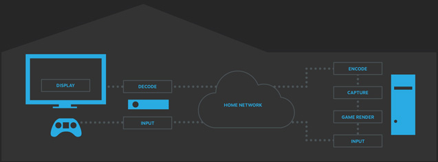

Steam Link 到底值不值那点网线材？——一个免费串流工具的隐性成本账
Steam Link 官方完全免费，但要用得爽得搭硬件。从轻度串流到 VR 重度玩家，分三档算清楚这笔账——免费的到底省了多少钱，又暗地要你掏多少。
Steam Link 有件事特别讨喜——它完全免费。Valve 没藏任何付费墙，它的官网上连个捐赠按钮都找不到，没有内购、没有高级版、没有会员制，装上就能用。但用过一阵你就会发现：免费归免费，要把它跑顺，硬件和网络条件的门槛比你想象中高得多。
我前前后后折腾了大半年，从最初用笔记本无线串流被延迟气得摔手柄，到后来拉网线、换路由器、开硬件编码，中间还动过心思要不要直接上 Parsec 付费版算了。今天把这笔账算明白：Steam Link 到底是真·零成本福利，还是一个需要前期投入才能兑现价值的"免费陷阱"？

先摆定价：Steam Link vs 那些付费对手
Steam Link 零元。主机端在 Steam 设置里勾一下远程畅玩就开了，客户端从各应用商店或Steam Link下载就能拿到，连账号都是你现成的 Steam 号，注册都省了。
但隔壁 Parsec 就不是这个路数了。Parsec 的免费版限制不少：只能局域网串流、不能用它的云端中转（意味着你出门在外串不了家里的 PC）、画质上限 1080p。要解锁公网串流、4K 画质、多显示器支持，得掏 9.99 美元/月 的 Pro 订阅，年付能砍到 99.99 美元——合着一年七百多人民币。
还有个经常被拿来对比的 Moonlight，其实也是免费开源的。但 Moonlight 只做客户端，主机端得自己装 Sunshine 服务，配置防火墙、弄端口映射全靠手动，对普通用户来说门槛比 Steam Link 高一大截。Steam Link 胜在"开箱即用"——同一局域网内打开 App 自动发现主机，点一下就串流，小白也能跑通。
所以定价层面 Steam Link 确实赢了——零元 vs 年付七百，差距摆在那。但定价只是账的一面，另一面是：你为了让 Steam Link 达到"能用"的标准，在硬件上花了多少钱？
分三档算账：轻度、主力、重度
轻度用户：凑合用行不行？
如果你只是偶尔想在躺床上用平板玩两局《星露谷物语》、或者周末想在客厅电视上跑个《我的世界》，那 Steam Link 真的零成本就能用。
不用拉网线，主机连 5GHz WiFi 就行（2.4GHz 别碰，干扰大到离谱）。不用管硬件编码——CPU 软编码虽然延迟高一点、占用大一点，但独立游戏对性能要求不高，软编码带得动。不用调什么带宽限制、缓冲大小，默认设置直接跑。
代价是延迟可能在 30~50ms，偶尔卡顿、偶尔花屏、偶尔自动断开。对策略类、回合制游戏影响不大，但对 FPS 来说 50ms 延迟基本等于自废武功。
时间账：轻度用户每次串流前花 30 秒打开 App、点连接、等加载，没有任何额外硬件投入。省钱省时间。
主力用户：想玩得爽要花多少？
如果你每天都要串流一两个小时，玩的是《艾尔登法环》《赛博朋克 2077》这种吃性能的 3A 大作，那以下几样东西是绕不开的：
第一笔钱：网线。 主机 PC 必须有线连路由器，Steam Link文档里反复强调的硬性要求。一根 Cat6 网线京东包邮大概 15 块钱，千兆交换机几十块（路由器 LAN 口不够的时候用）。这是最便宜的一项投入，但也是最关键的——主机无线的话，客户端再稳也白搭，串流延迟从 10ms 直接跳到 50ms。
第二笔钱：显卡硬件编码。 这个其实不用额外花钱——2012 年以后的 NVIDIA 显卡（GTX 650 及以上）、Intel CPU 核显（Ivy Bridge 及以上）、AMD RDNA 架构以后的显卡都自带硬件编码单元。Steam 里勾一下"启用硬件编码"就行，延迟直接从 20~40ms 压到 5~15ms，CPU 占用从 80% 掉到 5%。但有个坑：AMD RX 6400 和 RX 6500 XT 被阉割了硬件编码，用这两张卡的人要么换显卡、要么只能忍受软件编码的延迟。
第三笔钱：客户端设备。 Steam Link 客户端可以装在手机、平板、笔记本、Android TV 盒子上。如果你想用电视玩，NVIDIA Shield TV（带网口，硬件解码 Steam Link 特别好）现在二手大概 500 块；普通 Android TV 盒子两三百也能凑合用。手机和平板的话你大概率已经有了，不用额外投入。
第四笔钱：网络优化。 如果主机和路由器隔得远，拉网线不方便，电力线适配器（PLC）是个替代方案——一对 TP-Link TL-PA8010P 大概 200 块，插插座就能用，速度能到 300~500 Mbps，够 Steam Link 串流。但受家里电路干扰，延迟比真正有线略高 5~10ms，而且只能在同一个电表回路的插座之间用。
算总账：主力用户的硬件投入大概是 15（网线）+ 0（硬件编码已有）+ 0~500（客户端设备）+ 0~200（网络优化），0~715 元之间。如果家里刚好有合适的网线和设备，实际上一分钱不用花就能达到"爽用"标准。
重度用户：VR 串流和远程同乐
如果你要玩 Steam VR 串流、或者想拉三五个朋友远程同乐，门槛又上了一个台阶。
VR 串流对延迟的要求极端——超过 20ms 就容易晕动。这意味着主机必须有线、客户端头显必须在 5GHz WiFi 信号最强的位置、路由器不能有任何干扰。Quest 头显本身不带网口，只能无线，所以路由器位置特别重要——最好放在头显使用房间的天花板上。
远程同乐（多人同时串流）对带宽和硬件编码的并行能力有要求。每个好友都是独立编码流，RTX 30xx / 40xx 能并行处理多路编码，AMD 和 Intel 的并行编码能力弱一些，多人串流时可能退化成部分软件编码。
重度用户的硬件投入主要是 VR 头显本身（Quest 3 大概 4000 块），但这部分钱本来就是你买 VR 要花的，不算 Steam Link 的额外成本。额外的投入可能就是一台更好的路由器（WiFi 6 的大概 300~500 块）。
时间账：重度用户每次串流前要花 1~2 分钟检查网络状态、确认硬件编码是否正常开启、调整头显位置。调试时间比轻度用户多，但一旦跑通就很稳定。
替代方案：不花钱用 Steam Link vs 花钱上别的
如果你看完上面的算账觉得投入还是太多，有几条替代路可以走：
路一：Parsec 付费版。 年付 700 多块，换一个"开箱即用的全球公网串流"。Parsec 的云端中转意味着你出门在外（4G/5G）也能串家里的 PC，这是 Steam Link 做不到的（Steam Link 只能局域网或同网段）。如果你经常出差、想在酒店里串家里的 PC，Parsec 的公网能力值这个价。但如果你只在家里用，Parsec 付费版的优势就不明显了。
路二：Moonlight + Sunshine。 免费开源组合，功能比 Steam Link 更灵活（比如可以自定义码率、分辨率、HDR），但配置门槛高。端口映射、防火墙规则、服务安装全靠手动，对怕折腾的人来说不如 Steam Link 省心。
路三：干脆不串流，直接在主机上玩。 最省钱也最稳定，但放弃了"躺床上玩"、"电视上玩"、"远程跟朋友玩"的便利。
结论：三类人对号入座
算完这笔账，结论其实很清晰：
- 闭眼用 Steam Link 的人：家里有现成的有线网络条件、有支持硬件编码的显卡、主要在局域网内串流。免费、够用、开箱即用——这种情况下 Steam Link 就是白嫖级福利，一分钱不花就能达到"爽用"标准。
- 再等等的人：主机还在用无线、显卡被阉割了硬件编码、或者想出门在外串流。这几个人群要么先升级一下硬件（拉网线、换显卡），要么等 Steam 哪天开放公网串流（目前只在测试阶段）。Parsec 付费版可以作为过渡方案，但年付 700 的价格确实不便宜。
- 永远不用付的人：如果你只是偶尔凑合用、或者根本没有串流需求，那 Steam Link 免费也好、付费也好跟你没关系。别被"免费"两个字勾着就去折腾，折腾的时间成本也是成本。
我自己属于第一类——拉了网线、开了 NVENC 硬件编码、主要躺在床上串。折腾了大半年，投入了大概 50 块钱（网线 + 交换机），换来了每天一两个小时的"躺平游戏时间"。这笔账，值。如果之后想补点进阶参数，GitHub、Gitee、GitCode 这几个仓库里都有完整文档，国内访问 Gitee 可能更顺手。